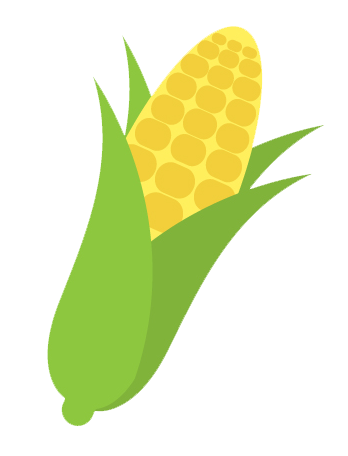
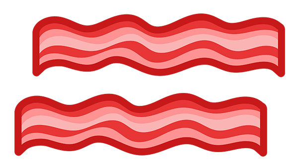

By Rosmery Izaguirre
One of the biggest and increasingly relevant issues in our society is climate change. Perhaps at some point you have taken steps like investing in a reusable straw or water bottle, recycling plastics from your everyday products, or just simply changing the old lightbulbs in your home for energy efficient ones. Another area that can be easily manipulated and make an impactful difference is likely one that affects you every day, several times in the day. Our meat consumption habits can have a massive impact on greenhouse gas emissions. Contrary to common misconceptions, you don't even have to give up meat cold-turkey (pun intended) to make a difference. Keep reading to see how different types of meat production impact the atmosphere through the emissions they release.
Enteric fermentation refers to the process which animals break down their food. As can be seen by the chart, cows release the most methane making beef production the costliest production type in terms of sustainability.
Despite only making up 10 percent of the global beef cattle population, the largest beef producer in the world is the United States. The efficiency of production in the United States is attributed to the low cost of corn in the US. Brazil is the second largest beef producer in the world.
As stated before, beef production is the costliest meat production in terms of environmental factors. Cattle account for 77 percent of global methane emissions from ruminant animals. Cows require up to five times more feed to produce one kilogram of protein in the form of meat than one kilogram of protein in the form of milk. Feed quality is another factor that can increase the methane emissions if it is neglected, oftentimes in meat manufacturing that can be the case.
Livestock production has been tied to environmental concerns other than greenhouse gas emissions. Deforestation has increased as agriculture practices make space for pasteurs to maintain cattle. Additionally, the rise of fields have discouraged the growth of other native animals to the land.
Pigs are the most widely consumed meat product in the world. The production of pigs is concentrated in specific regions due to cultural factors, with 95 percent taking place in East and Southeast Asia, Europe and the Americas.
Uncontrolled feed quality effects the emissions from pork production. The carbon emissions from the pigs themselves and the manure contribute to 81 percent of the total emissions asssociated with pig production. A measure that can reduce the greenhouse gas emissions of pig production is frequent removal of the animal waste.
The production of pig meat can vary slightly in its affect of the land. While it is possible to have pigs in a free range farm, many big farming companies keep pigs in crowded pens. While this does not directly impact the environment, some argue that it affects the quality of life of the animals and protest it for mistreatment and cruelty.
Chicken production is widespread globally. As seen in the chart, as emission rates are proportional to production rates, there are high production numbers in Latin America and the Caribbean, North America, and East and Southeast Asia. The highest egg production is accounted for in East and Southeast Asia.
Differences in the proportions of feed given to chickens impacts the methane emissions. However, it is important to note that the digestive process of chickens does not nearly compare to that of either cows or pigs. Infact, most emissions are accounted for through the manufacturing process with only about 11 percent of emissions attributed to the waste of the chickens.
Similarly to pig farming practices, the maintenance routines of big farming companies usually include keeping chickens in close pens, where oftentime they are incapable of moving. There have been more egg products claiming that the chickens are "free range" or "free to roam," however due to regulation specifications, questions have arisen as to whether this could only mean that they are free-range at certain times in the day in a limited space.
A common pattern in society is to simplify realities and paint things black and white. Whether it's politics, race, or the economy. Society is polarized to the point where small nuances are ignored. But the reality is that progress can be made without going to an extreme. Beef production is expensive when it comes to greenhouse gas emissions, but eating beef is something habitual to most people and it would be a sacrifice to live without it. So instead, it might be better to try to cut-back instead of cutting it out. Try meatless Mondays, or replace your usual burger with a chicken sandwich once in a while. The small steps matter and our individual actions contribute to a collective goal.
Attributions & Licenses
Data Sets & Articles